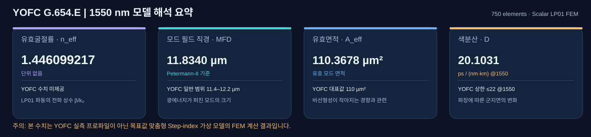
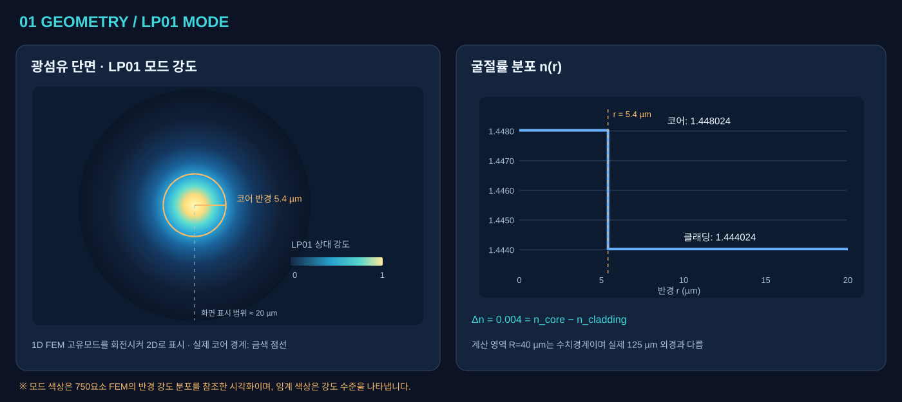
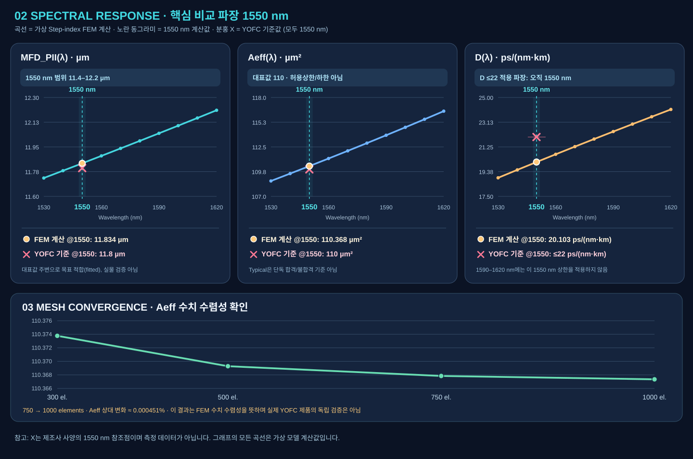
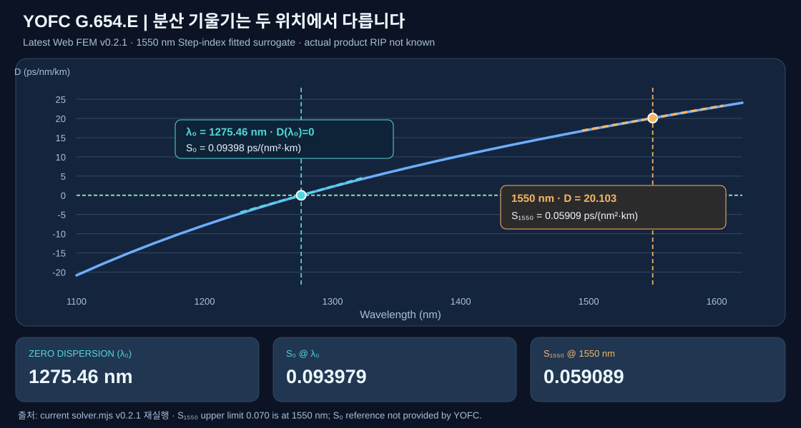

FIBER OPTICS · NUMERICAL BENCHMARK
YOFC G.654.E
광섬유 FEM 시각화 검증 보고서
숫자만으로 이해하기 어려운 MFD·Aeff·색분산 결과를 광섬유 단면, LP₀₁ 모드 강도, 굴절률 프로파일 및 파장별 곡선과 연결해 설명합니다. 기존 SciPy FEM 검증을 바탕으로 최신 웹 솔버 JavaScript v0.2.1의 원통대칭 반경 P1 FEM을 다시 실행한 결과입니다.
검증 범위: YOFC 실물 제품의 독립 검증이 아닙니다. 코어 반경 5.4 µm와 Δn=0.004는 제품의 실제 제조 파라미터가 아닌, 제공된 MFD·Aeff 대표값에 맞춰 설정한 가상 Step-index 모델입니다.
핵심 결과는 무엇을 뜻하나요?

n_eff
1.446099217파동 전파상수 β/k₀ · 직접 비교 사양 없음MFD_PII
11.8340 µm빛이 퍼지는 모드 크기 · YOFC 11.4–12.2Aeff
110.3678 µm²유효 광 면적 · YOFC typical 110D @1550 nm
20.1031ps/(nm·km) · YOFC 상한 ≤22새로 추가된 분산 기울기 S₁₅₅₀ / 영분산 파장 λ₀ / S₀는 동일한 가상 단면 모델에서 웹 솔버 v0.2.1로 계산했습니다. 수치 데이터와 소스 SHA는 아래 다운로드 섹션에서 확인할 수 있습니다.
왜 Aeff를 계산하나요?
광의 강도 분포로 정의되는 면적입니다. 물리적인 코어 면적 π(5.4)²≈91.6 µm²와 달리, 본 모델의 Aeff는 110.368 µm²입니다. 비선형계수 γ 산출에도 쓰입니다.광섬유 단면과 LP₀₁ 빛의 분포

- 왼쪽 중앙의 밝은 영역은 상대 강도가 큰 LP₀₁ 모드입니다. 외곽으로 갈수록 약해집니다.
- 금색 점선은 코어의 경계(r=5.4 µm)이며, 빛은 이 경계를 넘어서도 일부 분포합니다.
- 그림의 2D 강도는 1D 반경 FEM 강도를 회전해 나타낸 시각화입니다. 2D FEM 해석 결과는 아닙니다.
MFD와 Aeff의 수학적 정의 보기
유효면적 Aeff = (∫|E|² dA)² / ∫|E|⁴ dA, 단위 µm². 본 연구의 MFD는 Petermann-II 정의를 사용하므로 단순히 '코어 직경×상수'로 계산하지 않습니다. 서로 다른 MFD 정의(second moment 등)는 같은 필드에서도 값이 달라질 수 있습니다.
n(r) · 계단형 굴절률을 이해하기
위 오른쪽 그래프의 계단형 곡선은 r=5.4 µm에서 코어와 클래딩의 굴절률이 바뀌는 Step-index 가정을 나타냅니다.
| 구간 | 반경 r | 굴절률 n(1550 nm) | 설명 |
|---|---|---|---|
| 코어 | 0–5.4 µm | 1.4480236 | 실리카 기준값 + Δn |
| 클래딩 | 5.4 µm 이후 | 1.4440236 | 실리카 Sellmeier 굴절률 |
| 차이 Δn | — | 0.0040 | 코어−클래딩 굴절률 차 |
주의: 실제 광섬유 클래딩 외경 125±1 µm와 FEM 외부 계산 경계의 반경 R=40 µm는 서로 다른 항목입니다. YOFC 제품의 실제 내부 굴절률 프로파일은 제공되지 않았습니다.
파장이 바뀌면 MFD·Aeff·D가 어떻게 달라지나요? — 1550 nm 기준 강조

기호: ● FEM 계산값 / × YOFC 대표값 또는 상한. 세 그래프 모두 세로 점선과 강조된 X축 눈금이 1550 nm입니다. 두 기호가 가까운 것은 모델 입력을 YOFC 대표 MFD/Aeff에 맞추었기 때문입니다.
| 1550 nm 항목 | ● FEM 계산 | × YOFC 기준 | 해석 |
|---|---|---|---|
| MFD (Petermann-II) | 11.8340 µm | 대표 11.8 µm, 범위 11.4–12.2 | 대표값에 맞춰 모델 설정한 결과 · 실측 검증 아님 |
| Aeff | 110.3678 µm² | 대표 110 µm² | Typical은 허용상한/하한이 아님 |
| D(1550) | 20.1031 ps/(nm·km) | 상한 ≤22 ps/(nm·km) | 상한은 오직 1550 nm에 적용 · 모델값이 상한 이하 |
MFD / Aeff의 변화
1530→1620 nm에서 모델의 MFD 11.730→12.209 µm, Aeff 108.713→116.478 µm²로 증가합니다. 빛이 더 넓게 퍼지는 현상을 반영합니다.
색분산 D의 변화
1550 nm에서 D=20.103 ps/(nm·km), 근방 기울기는 0.059088 ps/(nm²·km)입니다. YOFC 1550 nm 상한인 D≤22, slope≤0.070과 모델값을 비교할 수 있습니다.
YOFC 사양표에서 ≤22 ps/(nm·km)는 1550 nm 조건입니다. 그래프의 D(1590–1620 nm)가 22를 넘는다고 해서 전체 파장에 같은 규격을 적용할 수는 없습니다.
1550 nm 분산 기울기와 영분산 기울기는 어디에서 다른가요?

S₁₅₅₀ · 1550 nm에서 계산
현재 모델의 1540 nm와 1560 nm 색분산 차이를 20 nm로 나누어 계산합니다. 0.059089 ps/(nm²·km)이며, YOFC 표의 1550 nm 분산 기울기 상한 ≤0.070과 비교할 수 있습니다.
S₀ · 영분산점에서 계산
1100~1550 nm를 검색하여 D(λ₀)=0인 지점을 찾고, λ₀±10 nm에서 D의 기울기를 구합니다. 0.093979 ps/(nm²·km)이나 YOFC가 제공한 제품 S₀ 값은 없습니다.
정의 혼동 주의: S₁₅₅₀와 S₀를 같은 규격과 비교하면 안 됩니다. YOFC의 0.070 상한은 1550 nm 조건에 해당합니다. λ₀=1275.457 nm와 S₀는 이 가상 모델의 계산 예측값입니다. COMSOL Wave Optics 실험이나 YOFC 실측 데이터가 아닙니다.
방법: D(λ)는 FEM n_eff(λ)의 5점 파장 차분(5 nm), S는 D(λ±10 nm)의 중앙 차분이며, λ₀는 D(λ) 부호 변경으로 bracket한 후 근을 세분 탐색합니다.
최신 Web v0.2.1 메시 수렴 확인
기존 Python SciPy 계산값과 별개로, 현재 웹 솔버가 요청한 요소 수와 실제 FEM 요소 수를 표시합니다. 내부 구간 분할 반올림 때문에 300/500 요청이 각각 301/501 실제 요소로 계산될 수 있습니다.
| 요청 | 실제 요소 | MFD_PII (µm) | Aeff (µm²) | n_eff |
|---|---|---|---|---|
| 300 | 301 | 11.834271 | 110.373822 | 1.446099072 |
| 500 | 501 | 11.834088 | 110.369268 | 1.446099183 |
| 750 | 750 | 11.834031 | 110.367841 | 1.446099217 |
| 1000 | 1000 | 11.834011 | 110.367343 | 1.446099230 |
750→1000에서 Aeff 변화율 0.000451%. 이 값은 수치해의 안정성 확인이지 실제 제조사 제품 검증을 의미하지 않습니다.
가능한 계산과 아직 검증할 수 없는 항목
| 항목 | 현재 상태 | 이유 / 추가 자료 |
|---|---|---|
| LP₀₁ 모드, n_eff, MFD, Aeff, D, D slope | 가상 모델 계산 완료 | 반경 P1 FEM과 Sellmeier + 상수 Δn 가정 |
| 실제 YOFC 내부 단면 | 검증 불가 | 측정 RIP/도핑 물성 미제공 |
| 감쇠, Cable cut-off, PMD, 굽힘 손실 | 계산하지 않음 | 제품별 추가 물성/측정 모델 필요 |
| 상용 COMSOL Wave Optics 결과 | 실행 안 함 | 본 보고서의 재실행 엔진은 JavaScript Web v0.2.1 scalar radial FEM (이전 SciPy 결과와 대조) |
원본 코드와 검증 결과 다시 확인하기
Model input: Step-index · λ=1550 nm · core radius=5.4 µm · Δn=0.004 · R=40 µm · n₂=2.2×10⁻²⁰ m²/W · elements=750.